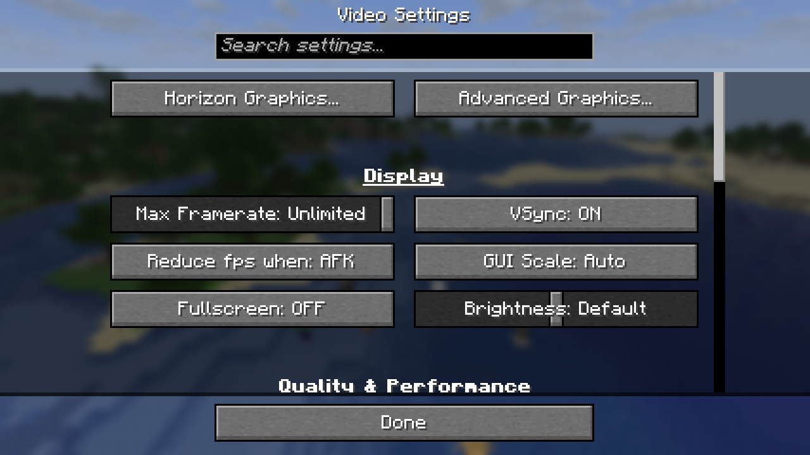
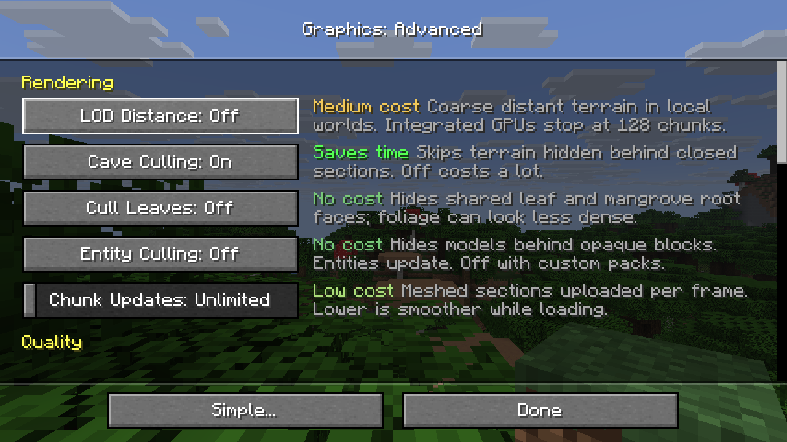

Graphics: settings and performance
Settings
Rusty Minecraft's graphics settings are two screens built from vanilla's widgets, opened from the top of Video Settings (Rusty Minecraft Graphics... and Advanced Graphics...) or from Options → Rusty Minecraft Settings...:
- Graphics (Simple): a preset (Performance, Balanced, Quality, Ultra or Custom) and LOD distance.
- Advanced Graphics: every Rusty Minecraft setting, grouped under Rendering, Quality, Display, Preferences, Performance and Overlay.
Vanilla's own settings (render distance, FOV, framerate, VSync, GUI scale, smooth lighting...) stay where vanilla has them, in Video Settings; both screens leave them out.
Every row has a one-line description and its cost in frame time (none, low, medium, high, or saves time for culling that makes frames faster), and applies at once, except worker threads, which apply at the next start. A preset sets the quality settings together; changing one of them turns it into Custom. Display preferences (FOV, framerate, VSync, GUI scale, fullscreen, present mode, pacing) leave the preset as it is.


| Group | Setting | Stored in |
|---|---|---|
| Rendering | render distance, simulation distance, entity distance | options.txt (vanilla keys) |
| LOD distance, cave culling, chunk updates per frame | horizon-graphics.txt |
|
| Quality | smooth lighting, mipmap levels, biome blend, clouds, cloud distance, weather radius, particles, entity shadows, cutout leaves | options.txt |
| sky, fog, weather, animated textures | horizon-graphics.txt |
|
| Display | FOV, max framerate, VSync, fullscreen, GUI scale | options.txt |
| resolution scale, anti-aliasing (FXAA or TAA), TAA upscaling, present mode, frame pacing | horizon-graphics.txt |
|
| HDR (its own screen, from Display) | HDR, black level, peak brightness, paper white, UI brightness, a shortcut key to the screen | horizon-graphics.txt |
| Performance | battery mode, worker threads, upload budget per frame | horizon-graphics.txt |
| Overlay | performance overlay: FPS, frame/CPU/GPU times, frame-time graph | horizon-graphics.txt |
options.txt keeps exactly vanilla's keys and values, so the options harness still compares it with vanilla; Rusty Minecraft's settings live in horizon-graphics.txt beside it. Their defaults render as vanilla does: cave culling on, no upload budgets, sky, fog and weather on, 100% resolution, no anti-aliasing, HDR off, the present mode following VSync. VSync on always waits for the display (Fifo), in a window and in fullscreen, as in vanilla; the present mode setting chooses how frames are shown only while VSync is off. Frame pacing defaults to Efficient: the limiter sleeps through the last half millisecond where vanilla spins, which changes timing, not pixels.
Battery mode (Performance, off by default) is for laptops and handhelds: at most 60 frames per second in a world, 30 in menus without a world or while another window has focus, and half the automatic worker threads (chunks load slower). It changes only when frames are drawn: what they show and the game's 20 ticks per second stay as they are.
HDR (off by default) lives on its own screen, Graphics: HDR, behind HDR Settings... under Display, which is greyed where the display path offers no HDR output (so players without an HDR display don't take its settings for their display's); there the switch comes first and the sliders below it only while it is on. It presents to an HDR10 swapchain (Rgb10a2Unorm, BT.2020 with the PQ curve) or, where only that is offered, an scRGB one (Rgba16Float, extended linear sRGB), on displays and compositors that offer either; HORIZON_HDR_OUTPUT=pq or scrgb allows only one. The frame is drawn exactly as in SDR, in vanilla's gamma space, and a last pass (hdr.wgsl) decodes it to linear light at the Paper White and lifts light sources (blocks that emit light, lava, the sun and the moon) towards the Peak Brightness; everything else stays as in SDR. The mesher puts the light a block's face emits in its vertex colour's alpha (EMISSION_BITS), the frame's alpha carries the mark, and only pixels that still show the world before the hand and HUD are lifted. On Vulkan, horizon-hdr sends HDR metadata (MaxCLL, mastering luminance), which wgpu doesn't: without it a compositor may clip everything above SDR white. Paper White and Peak Brightness are Auto by default: they follow what the system reports for the display. On Wayland that's the compositor's preferred image description of the window (wp_color_management_v1, in horizon-hdr's wayland.rs), asked and then watched while HDR output is on (with HDR off the game doesn't ask), so a move to another output or a recalibrated desktop applies at once. KWin maps the content's reference white (203 nits) onto the desktop's SDR white, so Auto puts Paper White at 203 and Peak Brightness at the display's peak over that ratio; Hyprland (0.57) doesn't: it reports the standard 203 as reference white, so Auto puts Paper White at 203, and it shows HDR windows below its own SDR white (sdr_max_luminance, which it doesn't report): in a test, a white browser page was brighter than both the game's white and a 1000-nit patch in mpv. Other compositors are unchecked. On Windows Auto takes what wgpu reads from the OS (Surface::display_hdr_info: DXGI's MaxLuminance and the SDR white level of Windows' SDR content brightness slider, both absolute nits), read again every 2 seconds since no event says they changed; these often come from the display's EDID and may run optimistic, and this is untested so far. Where nothing is reported, Auto is 203 and 1000 nits, and the Graphics: HDR screen asks the player to calibrate. Black Level (0 by default, for an OLED's true black) is the display's darkest black, in nits: the last pass lifts the shadows onto it with ITU-R BT.2390's black level lift in PQ, which leaves the peak where it is and fades out by the fourth power above black, and the metadata gives it as the minimum luminance; at 0 the picture is unchanged. UI Brightness (100% by default) sets the HUD and menus against paper white: once the world is kept for the last pass, the frame's alpha is zeroed, everything drawn after raises it where it covers the world, the first-person hand's is then scaled down to 1/255 (it stays at the world's brightness), and the last pass scales the rest by UI Brightness and lifts none of it (so text over the sun stays text). With HDR on, F2 writes vanilla's screenshot as always and an HDR10 copy beside it (…-hdr.png): the HDR pass drawn once more into a 10-bit PQ target, whatever the swapchain is, saved as a 16-bit PNG tagged BT.2020 with PQ (cICP, PNG's third edition) and the peak and paper white as content light levels (cLLI); viewers that read cICP show it in HDR, others show it washed out. Not lifted yet: translucent blocks (the nether portal), distant LOD terrain.
HDR's light sources shine by the kind of light rather than its level (mesher::hdr_tier): the sun most, then glowstone, campfires and the soul fires, then flames and lava, torch and candle flames among them (particles too), then faint glowers such as a redstone torch or magma; glow lichen stays as in SDR. Each tier has its share of the headroom and the brightness its lift starts and ends at (gfx/hdr.rs TIERS); HORIZON_HDR_DEBUG=1 greys what isn't lifted and tints what is magenta.
Which settings each screen shows, their descriptions and costs are in crates/horizon-client-render/src/graphics_ui.rs (rows); graphics_style.rs draws them.
Distant terrain
LOD Distance is off by default. Enable it in Simple or Advanced graphics settings and choose 64, 128, 256, 512 or 1024 chunks. With LODs enabled, Full Detail Distance controls the nearby normal chunks; LOD Distance controls the outer view. Keep the nearby range modest, for example 12 chunks with a 256-chunk LOD distance. Increasing the distant range does not increase simulation distance.
Distant terrain uses progressively coarser voxel columns. Columns retain separate material layers and air gaps; matching exposed faces are merged, with block-scale texture repeats. Complete chunk data is reduced once on the terrain worker and cached at each supported scale, across each cell’s area instead of enlarging its corner column. Material votes combine different light levels of the same block; reduced cells retain the brightest sampled sky and block light separately. Finer tiles replace only their own footprints in a loading fallback, and a movement margin limits rapid resolution changes at tile boundaries. When Full Detail Distance shrinks, the chunks it no longer covers stay drawn until the tiles planned there are ready, so the coarsest loaded tiles never stand in for them. Local Overworld, Nether and End worlds and a LAN world you host can supply their generator. Remote servers do not supply the client's world-generation seed or generator configuration.
Unknown areas are sampled directly from the dimension's seed-bound density and surface rules, with shared per-tile scratch and material evaluation. A small pool samples tiles independently of meshing. Refinement prioritizes visible screen error; high aerial views use the distance to the world height range to avoid unnecessary close detail below the camera. Initial vegetation uses the world's configured tree types, placement densities and biome assignments at every distance level, and chorus plants on the End's end stone in the same way. The End's small islands are estimated above the void from the end_island_decorated feature. Tree, chorus and island positions, shapes and large-cell coverage are visual approximations, not a replay of native feature placement; chorus is drawn only while its cells stay small enough to read as a plant.
A separate bounded worker refines the nearest LOD levels with disposable ordinary chunk generation, including supported carvers, structures and decoration. Groups of 4×4 chunks share their generation halos, and each chunk is published once every neighbouring feature center has completed. Farther tiles use direct sampling rather than waiting for every intervening ordinary chunk. Saved and visited blocks take precedence over both paths. These temporary chunks never enter gameplay, simulation or normal save queues. Generated-column caches and request queues are bounded; far data is regenerated after reopening a world.
Coverage and detail improve progressively; a large selected radius does not mean all its target detail is already resident. Far sampling runs behind the game's frame and tick threads; on machines with 12 or more threads it uses up to 6 sampling threads once the nearby chunks have loaded (a quarter of the threads, at most 3, elsewhere). The control status reports target and sampled target tile counts separately. Direct far sampling approximates vertical noise interpolation, fluid boundaries and lighting; surface slopes and column extensions, small features and partial block shapes can differ. Unexplored distant structures are not synthesized by the direct path, and native decoration order can differ from subsequent gameplay generation. Rusty Minecraft-supported data-driven noise and tree configurations can be reused; this does not execute arbitrary Fabric/NeoForge worldgen or structure mods.
Ordinary Overworld atmospheric fog extends with the selected LOD distance. Fog Off disables distance haze at large ranges too; fluid, darkness and boss fog retain their limits.
The setting is stored as lodDistance in horizon-graphics.txt; 0 disables it. Far Detail (Full or Reduced) sets how finely the distant terrain is drawn (Reduced draws about a quarter of the far quads). Existing renderDistance in options.txt keeps its normal meaning for full chunks.
Anti-aliasing cycles Off, FXAA and TAA (fxaa and taa in horizon-graphics.txt). TAA jitters the world's projection by a sub-pixel offset each frame (Halton 2, 3 over 8 frames) and blends the frame into a history reprojected through the depth buffer, clamped to the frame's 3×3 neighbourhood. Its motion vectors come from the camera alone, so mobs and other moving things rely on the clamp and can trail slightly. It runs at the resolution scale, before the hand and HUD, and is off under a shader pack, which does its own.
Upscaling (upscaling in horizon-graphics.txt) renders the world smaller than the resolution scale's size and lets TAA rebuild it at that size: Native 1×, Quality 1.5×, Balanced 1.7×, Performance 2× and Ultra Performance 3× fewer pixels along each axis (FSR's and DLSS's ratios). The jitter then runs over 8 frames per output pixel, and each frame counts in an output pixel by how near its sample lands. The button shows only while Anti-aliasing is TAA; leaving TAA goes back to Native. Textures keep the mipmap level of the smaller frame, so far blocks are softer than at Native.
Not implemented: anisotropic filtering (wgpu needs linear magnification for it, which blurs close blocks), MSAA (FXAA or TAA instead) and exclusive fullscreen (fullscreen is borderless).
Benchmark
tools/graphics_bench.py opens a fresh creative world (seed 1234) on a virtual screen and flies the camera along four fixed 192-block paths, over a village, a forest, the ocean and a mountain, at render distances 8, 16 and 32, one game per distance. Each flight takes 12 seconds and reports average FPS, 1% lows, frame-time percentiles, CPU time per frame (frame time minus waits for the GPU, the display and the limiter), the split of that CPU time (world update, ticks, frame preparation, renderer) for all frames and for the slowest 1%, and GPU time per frame from timestamp queries.
cargo build --release -p horizon-client --bins
python3 tools/graphics_bench.py --label mine # lavapipe on vscreen: CPU-side numbers
python3 tools/graphics_bench.py --label mine-gpu --offscreen # the desktop's RTX 4080
python3 tools/graphics_bench.py --compare baseline-4080 mine-gpu # markdown table
vscreen is a headless compositor whose frames are software-rendered (lavapipe), so its frame times measure the CPU, rasterisation included. --offscreen (horizon-client --offscreen) renders into a texture on the most powerful GPU instead of the window, which measures the RTX 4080 under the same compositor. --distances, --scenes and --build pick a subset or another build. Results go to benchmarks/graphics/<label>.json, with the load average before and after: the desktop is shared, and other sessions' builds move the numbers.
Two tools find where a slow frame goes: HORIZON_SPIKES=MS prints the timed spans (ticks by system, streaming, uploads, saving, renderer) of every frame slower than MS milliseconds, with the render thread's CPU time in the frame and, after a span that mostly waited (for the GPU, a lock or a core), its CPU time (submit 30.2/0.1), and a frame-pointer build (RUSTFLAGS="-C force-frame-pointers=yes") profiles with perf record --call-graph fp.
Results
Baseline 27a32cc3 (main) against 9006566b, the same full run (render distances 8, 16 then 32 in one fresh world), on ludodesktop.
RTX 4080, --offscreen (benchmarks/graphics/baseline-4080.json, after-4080.json):
| RD | scene | avg FPS | 1% low FPS | p99 ms | CPU ms/frame | GPU ms/frame |
|---|---|---|---|---|---|---|
| 8 | village | 363 → 2409 | 21.6 → 160.8 | 37 → 1 | 2.7 → 0.4 | 0.42 → 0.10 |
| 8 | forest | 613 → 1099 | 49.6 → 82.9 | 10 → 10 | 1.6 → 0.9 | 0.40 → 0.26 |
| 8 | ocean | 323 → 687 | 5.4 → 47.5 | 33 → 16 | 2.7 → 1.4 | 0.24 → 0.37 |
| 8 | mountain | 28 → 344 | 7.4 → 30.0 | 111 → 33 | 12.4 → 1.6 | 0.46 → 0.34 |
| 16 | village | 8 → 1041 | 2.4 → 64.0 | 409 → 10 | 138.3 → 1.0 | 3.59 → 0.23 |
| 16 | forest | 28 → 316 | 0.5 → 49.6 | 159 → 18 | 37.9 → 3.2 | 2.68 → 0.75 |
| 16 | ocean | 59 → 385 | 10.5 → 72.0 | 85 → 12 | 16.8 → 2.6 | 1.96 → 0.68 |
| 16 | mountain | 27 → 220 | 7.8 → 30.0 | 109 → 33 | 20.2 → 3.1 | 7.14 → 0.94 |
| 32 | village | 4 → 48 | 2.6 → 0.8 | 387 → 76 | 244.2 → 9.4 | 10.36 → 1.77 |
| 32 | forest | 8 → 28 | 3.7 → 0.9 | 261 → 1108 | 118.7 → 40.1 | 15.90 → 2.30 |
| 32 | ocean | 2 → 67 | 1.6 → 10.1 | 626 → 95 | 424.8 → 14.7 | 9.48 → 2.91 |
| 32 | mountain | 3 → 29 | 2.5 → 15.2 | 407 → 64 | 300.5 → 16.1 | 9.73 → 8.47 |
lavapipe on vscreen, CPU-rendered (baseline-lavapipe.json, after-lavapipe.json); at 16 and 32 chunks most of the frame is software rasterisation, which no change here touches:
| RD | scene | avg FPS | 1% low FPS | p99 ms | CPU ms/frame | GPU ms/frame |
|---|---|---|---|---|---|---|
| 8 | village | 16 → 58 | 6.6 → 31.3 | 134 → 29 | 48.2 → 11.4 | 26.73 → 13.52 |
| 8 | forest | 20 → 42 | 9.9 → 20.0 | 95 → 37 | 31.0 → 18.0 | 37.27 → 21.36 |
| 8 | ocean | 28 → 60 | 1.5 → 34.8 | 181 → 27 | 25.7 → 10.9 | 18.86 → 12.74 |
| 8 | mountain | 27 → 38 | 11.2 → 27.3 | 75 → 34 | 22.5 → 11.5 | 23.76 → 14.11 |
| 16 | village | 11 → 21 | 4.2 → 8.8 | 227 → 75 | 69.2 → 31.8 | 49.04 → 40.50 |
| 16 | forest | 12 → 18 | 5.7 → 11.5 | 137 → 81 | 58.4 → 36.8 | 56.45 → 47.82 |
| 16 | ocean | 8 → 8 | 2.6 → 4.8 | 385 → 209 | 98.4 → 96.7 | 71.51 → 57.30 |
| 16 | mountain | 6 → 12 | 3.1 → 4.9 | 321 → 189 | 124.9 → 56.7 | 95.47 → 70.81 |
| 32 | village | 3 → 5 | 2.0 → 3.6 | 497 → 278 | 345.6 → 111.2 | 85.50 → 121.35 |
| 32 | forest | 2 → 4 | 1.5 → 3.4 | 656 → 296 | 354.8 → 155.5 | 201.54 → 192.78 |
| 32 | ocean | 3 → 3 | 1.2 → 2.2 | 849 → 465 | 330.8 → 288.0 | 113.80 → 116.97 |
| 32 | mountain | 3 → 4 | 1.8 → 2.4 | 570 → 414 | 325.2 → 171.4 | 104.99 → 166.80 |
Render distance 32 still has long stalls in the forest and village flights: the slowest frames are game ticks (mob AI bursts as chunks load, and thousands of dropped items piling up in some chunks, which the sequential run accumulates), not rendering. Results swing between runs on the shared desktop; the probe runs during the work saw RD 32 forest from 15 to 335 FPS depending on what the world had accumulated.
What changed
The baseline was CPU-bound everywhere: on the RTX 4080 the GPU spent 0.2 to 16 ms per frame, the CPU 2 to 425.
- Ticking: mobs, minecarts and dropped items outside the entity-ticking chunks (the simulation distance, as
DistanceManager.inEntityTickingRange) only check despawning, as inServerLevel.tick; every loaded one used to tick, so render distance 32 ticked seven times as many as vanilla. Villager POI searches skip sections whose palette holds no POI block. Sky darkening is sampled once per time and weather instead of once per mob, and the world's chunk map uses a fast hash. - Stalls: chunks and entity chunks unloaded while moving are encoded and written by a background region writer (loads see queued records first, saves wait for the queue); deleting entity chunks a region doesn't hold no longer rewrites the region file; unloading drops block entities in one pass instead of one per chunk.
- Rendering: terrain sections share one vertex arena drawn with one indirect multi-draw per pass, instead of a buffer and draw call each; the cave-culling search runs on dense arrays; mobs are culled by the view frustum and vanilla's per-entity render distance, block entities by the frustum; per-frame scratch buffers are reused.
- Streaming: its bookkeeping uses the fast hash, and a column's readiness for meshing is checked once per frame rather than once per dirty section.